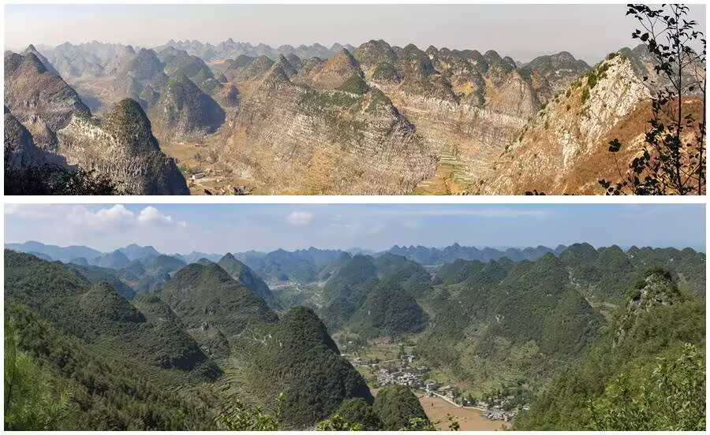
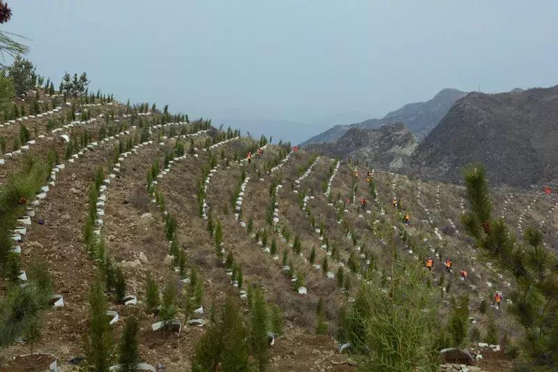

羽翼守望者


全球森林面积正以惊人的速度减少，每年约有1000万公顷森林被毁或退化（FAO, 2020）。森林的丧失直接导致林鸟栖息地破碎化，许多依赖原始林的物种面临灭绝风险。森林修复旨在通过人工干预或自然恢复，使退化林地重新具备完整的生态功能，为鸟类提供安全的繁殖、觅食和迁徙停歇场所。
修复策略包括再造林（reforestation）、辅助自然更新、生态廊道建设等。科学研究表明，经过20~30年修复的次生林，其鸟类多样性可恢复到原始林的70%~80%（Chazdon et al., 2009）。

选择适宜的乡土树种进行种植至关重要。外来速生树种虽能快速成林，但往往无法为当地鸟类提供足够的食物（果实、昆虫）和巢址。例如，在华南地区种植的桉树纯林，其鸟种丰富度远低于混交的乡土阔叶林（Zhang et al., 2021）。因此，修复工作应优先选用本土植物，并模拟自然林的分层结构，营造林冠层、下木层和草本层，满足不同生态位鸟类的需求。
此外，保留枯立木和倒木对依赖树洞筑巢的鸟类（如啄木鸟、山雀）尤为重要。研究表明，每公顷保留5~8棵枯立木，可显著增加洞巢鸟的种群密度（Cockle et al., 2010）。